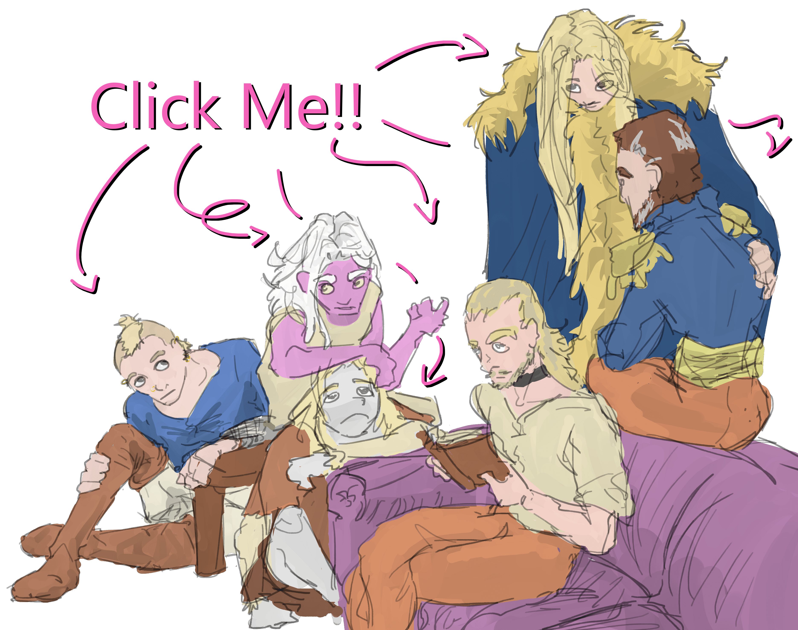

How to play
Drag two characters to boxes below. See what the character in the left box thinks of the character in the right box. Swap them to see if the if their feelings are reciprocated.

Cole met Theo after being summoned by Sun. Cole naturally liked Theo because he was beautiful but upon getting to know him, her opinion of Theo degraded. She did not think he was a bad person, far from it she could see he had a kind heart, but his meek and mild nature irked her. Cole saw Theo as underdeveloped and she wanted to get him out of his shell. She started viewing him as a project to be worked on, she would put him in uncomfortable situations and do what she could to make him stand up for himself. Cole entered an unspoken agreement with Sun to get him out of his shell. Cole and Theodore becoming separated from Sun was the catalyst to Theo finding his courage, he became more confident and Cole began seeing Theo as an equal rather than someone who wasn’t finished growing up. From there they became much closer.
Cole’s first time meeting Sun was when he summoned her naked on a warm stone slab slicked with blood underneath a church of the old gods. Sun introduced himself and his companion Theodore once she had gotten her bearings and Cole immediately didn’t like him. His pompous arrogance immediately reminded Cole of the drowned god who she was all too familiar with. Except that in Sun’s case, his arrogance was unjust as he had no means by which to force his will on others for he could wield neither magic nor his physical strength. After Sun told his story to Cole she rode him off as a washed up god who’s luck carried him farther than his own feet. This was the opinion she held of him until she saw him able to perform magic in the domains of other gods, a terrifying sight. Henceforth Sun was recontextualized and she saw him as he was, a muzzled fox in a hen house. It’s then when she strikes a deal with Sun to teach her how to become a god, and he becomes a mentor to her.
Cole has never met Ronan.
Cole has never met Esme but knows of her through talking with Theodore. From hearing about her courage and lust for adventure, Cole thinks she would like Esme.
Theo saw Cole for the first time after she was summoned by Sun. When Cole was first nice to Theo and he became close with her. But somewhere along the journey Cole became mean and started treating Theo poorly. It began with teasing and making fun but turned mean spirited. Sun influenced her to act unkind toward Theo. Theo began to resent Cole for how she treated him until the day they separated from Sun. After that Cole had a change of heart and began to act warmer towards Theo. Theo would have appreciated an apology but never worked up the courage to ask for one. Theo admired how Cole presented herself and the courage that she had. Spending so much time together he began to have romantic feelings for her.
Theo met Sun in the church of his hometown. Sun forced Theo into getting involved in Cole’s summoning spell. Sun took Theo hostage, threatened to kill Theo if he did not cooperate with him and followed him after Sun summoned Cole. Theo hates Sun because Sun forced Theo to leave the comfort of his home town, possibly never to see his family again. Sun acts as Theo’s captor until he is able to separate himself and Cole from the Sun. Theo also resents Sun for turning him into a freak, because Sun involved Theo in Cole’s summoning spell Theo’s skin became desaturated, and his eyes and hair turned to unnatural colors.
Sun has never met Ronan, if he did meet Ronan he would probably have great admiration for the man. Theo was taught to respect those in power and as Ronan is a just and wise king,
Esme is Theodore’s younger sister, the two were exceedingly close as they grew up. When they weren’t learning from their mother or working with their father, they would play in the forests. They often read books borrowed from their nearby church together on the hard floor of their small home. Esme always chose the books of adventurers, tales of gore, glory, and danger. While Theodore tended towards books grounded in reality like the histories. Theodore’s favorites were poetry books, Esme wouldn’t let him choose two in a row because of how long he could spend re-reading his favorite passages. As they grew up Esme would always tell Theodore about how she wanted to travel out of their town and see the world. Theodore tried to talk her out of it because it was dangerous (really he didn’t want to leave alone in Weilheim). Eventually when she was old enough, Esme traveled to the nearby capital of Sunhold Cales. After her trip to the capital Esme was decided and set out a month later for good. They said their goodbyes and Theo hasn’t seen his sister since, he misses her and hopes to see her again some day.
Sun summoned Cole for the purpose of completing his spell. She is important to him more as a tool than as a person. He treats her kindly and is protective over her because he needs her to translate and perform the spell in the monograph.
Theo is an annoyance to Sun. Theo walked in on Sun when performing his spell to summon Cole. Sun was going to kill Theodore to ensure he didn’t interrupt the spell but accidentally got his blood on Theo making him a part of the spell. Sun, in an effort to make Cole like him more, would act very nice to Theo in the presence of Cole but would be more disdainful of him when she wasn’t around.
Sun first met Ronan in the forest when searching for a forest god. At the time Sun and Moon were traveling the world in search of becoming a deity. Ronan had a relationship with a bird deity and in an effort to understand more and possibly interact with her. They lived in Ronan's cabin in the woods for months and became good friends. Sun was looking for a third person to join them on their journey and over the months convinced Ronan to leave his hermit life and join them traveling in search for power. When Sun left the forest Ronan joined them on their quest for more power. They traveled for years together and the three of them became wonderfully close with one another. After becoming deities parted ways on good terms. hundreds of years past the three stayed in the domains until Sun was betrayed and kicked out of the domain he shared with Moon. Not knowing where else to go Sun found Ronan the leader of a large and flourishing kingdom. He stayed with Ronan until he could get back on his feet and find his purpose.
They have not met.
Ronan had a vague idea that the spellbook contained an addendum that would allow him to summon help with the casting of the spell. He doesn’t know anything about this person other than they can be summoned to help him.
Because Sun has not returned to Ronan’s kingdom following the events of the night at the church when Cole was summoned, Ronan does not know of Theodore.
Ronan met Sun after he had resigned himself to living as a hermit without human contact for the rest of his days. Sun and Moon became very close in the forest and brought him out of it. They rejuvenated his will to live among people and showed him how to work together to fulfill his destiny of becoming a just ruler. Ronan admired and at times feared Sun’s singularly spectacular dominance of magic. They remained close until the day they parted their three ways to meet again as deities. The three were very close and although Ronan trusted Sun completely, after Sun found his way into becoming a deity, Ronan had a fear of Sun he never could shake. They worked together until all three of them had been blessed by three of the Seven gods, and then parted ways to draw up their domains. For the first hundred years they would make attempts to visit one another but Ronan became busy with his kingdoms and eventually stopped seeing his old friend until the day he showed up like a wet dog at his doorstep. It pained Ronan to see his friend so hurt and stripped of his power which he used to define himself. Ronan caught up with Sun and it was nothing like old times but still they found each other's company just as warm and pleasant in new ways. Ronan helped him on his way and back on his feet, Sun promised to return and Ronan looks forward to the day.
They’ve never met.
Esme has yet to meet Cole.
Theo is Esme's younger brother, she were very close as children because they were each other's only source of entertainment. Theo's favorite thing to do with Esme was to read together in their late grandfather's library. They were always together, Theo loved to read books but Esme preferred to play adventure outside. When they read together Theo picked books about places and locations while Esme's favorites were always biographies of tails of adventure in distant lands. Esme's nickname for Theo was Thebes, a name of an old city they read of in a book. Esme was always made responsible for Theo because she was bigger and older.
Esme has yet to meet Sun.
Esme has yet to meet Ronan.